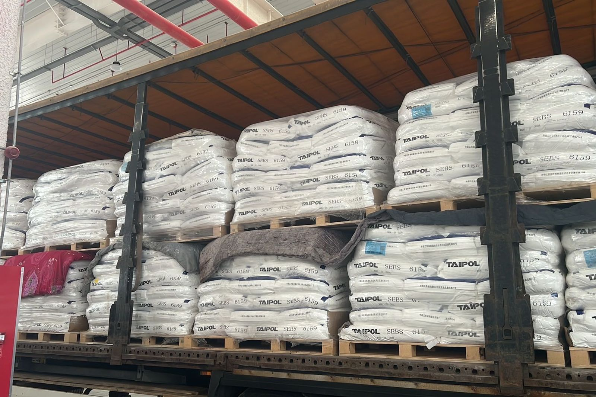

MODES
海运、铁运、公路怎么选
中国到伊朗，货运三种走法：海运、铁运、公路。这一页只做对比，运费和周期都按当期单询。
- 海运：到阿巴斯港再陆运，周期最长，走霍尔木兹海峡
- 铁运：不直达伊朗；中吉乌在建未通
- 公路：新疆出，两条走廊，约 22 天到德黑兰场站
- 三种的价和期都按当期单询
海运
到阿巴斯港（Bandar Abbas），再陆运到德黑兰。周期最长。走霍尔木兹海峡，局势紧时可能涉及战争险。海峡局势下的物流保险
铁运
不直达伊朗。中吉乌铁路在建、还没通车；现有班列多走里海或土耳其换装，是另一套线路。中吉乌铁路进展
公路
从新疆出，两条走廊——乌恰（过吉尔吉斯加货值发票税 0.4%）、霍尔果斯（不加）。到德黑兰场站约 22 天，不是到门。乌恰还是霍尔果斯 · 公路时效
怎么选
急的、批量中等、要少开箱的走公路。超大宗、不急的看海运。三种的价和期都按当期单询。
目的城：马什哈德、德黑兰、萨拉赫斯。结算人民币或境外。

询盘四样：货名；件数/重量；目的城；乌恰或霍尔果斯。